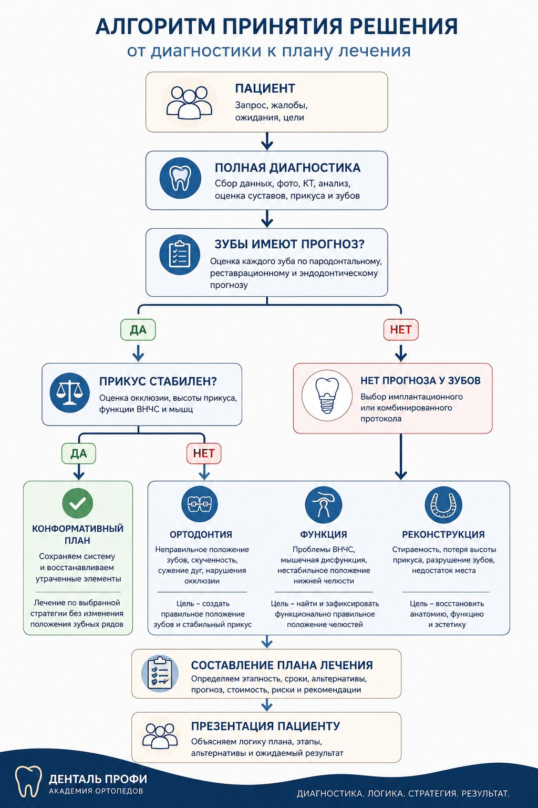
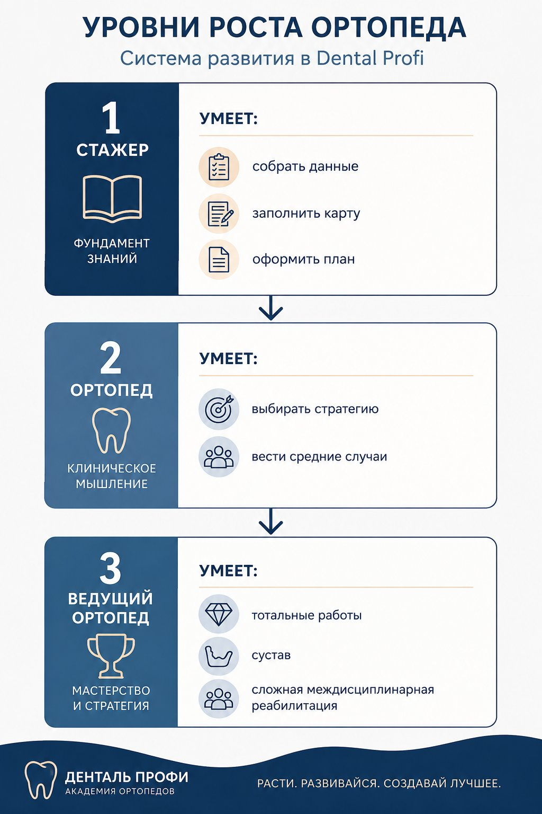

Диагностика и планирование комплексной реабилитации Денталь Профи
Как собрать данные, определить прогноз, выбрать стратегию лечения и создать понятный комплексный план
Назначение документа
Это учебный модуль Академии ортопедов Денталь Профи. Его задача – научить врача не просто находить кариес, отсутствующие зубы и дефекты реставраций, а видеть всю зубочелюстную систему целиком, понимать причину разрушения, определять прогноз и переводить диагностику в понятный комплексный план лечения.
Главная логика модуля
Диагностика, клиническое мышление и план лечения не существуют отдельно. Это одна цепочка: данные – анализ – прогноз – стратегия – этапность – план лечения – презентация пациенту. Если врач нарушает эту последовательность, план становится набором процедур. Если врач соблюдает эту последовательность, план становится маршрутом восстановления системы.
Кому нужен этот модуль
Модуль предназначен для врачей-ортопедов, стажеров, молодых специалистов, координаторов и наставников, которые участвуют в комплексной реабилитации пациентов Денталь Профи. Для врача это клинический алгоритм. Для координатора это логика маршрута пациента. Для наставника – это критерии контроля мышления врача.
Результат обучения
Врач умеет собрать полный диагностический пакет до составления плана.
Врач оценивает каждый зуб по реставрационному, эндодонтическому и пародонтологическому прогнозу.
Врач различает конформативный, ортодонтический, функциональный, реконструктивный, имплантационный и компромиссный протоколы.
Врач составляет этапный план, который можно передать пациенту и команде без дополнительных устных объяснений.
Врач понимает, когда можно лечить локально, а когда локальное лечение разрушит долгосрочную стратегию.
История создания методологии
Методология комплексной реабилитации Денталь Профи появилась не как набор теоретических правил и не как попытка создать очередной стандарт лечения. Она сформировалась постепенно через десятилетия клинической практики, анализа сложных случаев, ошибок, поиска решений и постоянного вопроса: что действительно обеспечивает пациенту долгосрочный результат?
На первых этапах развития врача основное внимание обычно направлено на освоение технических навыков: как правильно препарировать зуб, как снять точный оттиск или выполнить цифровое сканирование, как изготовить красивую реставрацию. Но с увеличением количества сложных пациентов приходит понимание: качество отдельной процедуры не гарантирует успех всего лечения.
Можно идеально сделать коронку, но поставить ее в неправильную систему.
Можно качественно установить имплант, но не решить проблему прикуса.
Можно красиво восстановить зубы, но не устранить причины, которые привели к их разрушению.
Настоящий переход в комплексной стоматологии происходит тогда, когда врач перестает мыслить отдельными процедурами и начинает видеть всю зубочелюстную систему.
За годы работы с комплексными пациентами стало очевидно, что успешный результат зависит не только от мастерства одного врача. Он зависит от правильной последовательности: собрать данные – провести анализ – определить прогноз – выбрать стратегию – построить этапы – реализовать лечение – сохранить результат.
Любая ошибка в начале этого пути становится проблемой в конце. Если неправильно определить прогноз зуба – можно построить сложную работу на слабой основе. Если не оценить функцию и сустав – можно создать красивую, но нестабильную систему. Если не продумать этапность – команда начинает исправлять проблемы вместо движения к результату. Поэтому постепенно появилась необходимость создать не просто набор клинических протоколов, а единую систему мышления врача.
Методология Денталь Профи объединяет:
диагностику;
клиническое мышление;
прогнозирование;
междисциплинарное планирование;
работу команды;
коммуникацию с пациентом;
поддержание результата.
Методология учит врачей принимать решения на основе единых принципов, сохраняя индивидуальный подход к пациенту. Каждый пациент индивидуален. Не существует одного универсального плана лечения. Но существует правильная последовательность мышления, которая позволяет выбрать оптимальный путь.
Главная идея методологии:
Мы не начинаем с вопроса «что сделать?».
Мы начинаем с вопроса «какой результат мы хотим получить и почему именно этот путь приведет к нему?»
Эта методология продолжает развиваться. Новые технологии, материалы и цифровые инструменты меняют способы достижения результата. Но фундамент остается неизменным:
уважение к пациенту;
поиск причины, а не устранение симптома;
долгосрочный прогноз;
командный подход;
постоянное развитие.
Именно эти принципы лежат в основе комплексной реабилитации Денталь Профи.
1. Философия диагностики Денталь Профи
Диагностика в Денталь Профи – это не поиск отдельных дефектов. Это способ понять, что произошло с зубочелюстной системой, почему это произошло и что будет происходить дальше, если ничего не изменить. Врач должен отвечать не только на вопрос «что лечить», но и на вопрос «почему именно так лечить».
Слабый план лечения начинается с перечня процедур. Сильный план лечения начинается с прогноза. Поэтому врач сначала собирает факты, затем анализирует связи между ними, затем определяет прогноз, выбирает стратегию и только после этого формирует этапы лечения.
Ключевые принципы
Лечим не отдельный зуб, а систему. Даже локальная коронка должна быть вписана в будущую стратегию пациента.
Сначала понимаем причину, потом выбираем лечение. Коронка, имплант, ортодонтия или сплинт – это не начало мышления, а следствие анализа.
Прогноз важнее текущего состояния. Зуб может выглядеть сохранно, но не иметь долгосрочного прогноза. Другой зуб может быть разрушен, но иметь смысл как одиночная опора или как элемент временной стратегии.
Комплексная диагностика не означает всегда тотальное лечение. Иногда правильное решение – профилактика, санация или локальное восстановление.
Компромисс допустим только тогда, когда он не ухудшает будущие возможности лечения.
План лечения должен быть понятен пациенту, врачу, координатору, ортодонту, хирургу, терапевту, гигиенисту и администратору.
Каждый этап должен готовить следующий этап, а не создавать для него проблемы.
После хирургии мы не возвращаемся к нерешенной санации. После ортодонтии мы не должны внезапно обнаруживать зубы с плохим прогнозом. Перед протезированием система должна быть подготовлена.
Что врач должен удерживать в голове
Каждый пациент приходит с запросом. Но запрос пациента редко равен полной клинической проблеме. Пациент может хотеть один зуб, жевание слева, красивую улыбку, убрать боль в суставе или «просто привести все в порядок». Задача врача – уважать запрос пациента, но не сужать диагностику до этого запроса.
Мы всегда должны показать пациенту, как правильно и долгосрочно. После этого можно обсуждать альтернативы. Но врач не имеет права предлагать компромисс, не понимая полного варианта. Компромисс без полного плана – это не клиническая гибкость, а слепое лечение.
2. Диагностический пакет: что должно быть до плана лечения
План лечения нельзя составлять по памяти, по одному снимку или по устному описанию. Перед врачом должны быть открыты примечания первичной консультации, фотопротокол, КТ, шаблон плана лечения и при необходимости дополнительные исследования.
Обязательные данные
| Блок данных | Что входит | Зачем нужно |
|---|---|---|
| Примечания первичной консультации | Жалобы, запрос, ожидания, страхи, ресурсы, предварительные договоренности, ограничения по времени и финансам | Чтобы план не был оторван от пациента и чтобы диагност понимал, что именно обсуждалось на первичном приеме |
| Фотопротокол | Полный фотопротокол: открытый и закрытый прикус, правый и левый прикус, фронт, язычная поверхность, дополнительные фото проблемных зон | Чтобы оценить эстетику, стираемость, гигиену, окклюзию, положение зубов, видимые кариесы, качество старых реставраций |
| КТ | Зубы, корни, каналы, очаги воспаления, костная ткань, отсутствующие зубы, условия для имплантации | Чтобы определить прогноз зубов и хирургические возможности |
| КТ с суставами | Положение суставных головок, суставные щели, признаки артроза, асимметрия, дистализация | Чтобы понять, нужна ли сплинт-терапия, депрограммация или изменение положения нижней челюсти |
| Дополнительные исследования | ОПТГ, ТРГ, 3D-цефалометрия, ортодонтический пакет, прицельные снимки. | Чтобы уточнить ортодонтическую стратегию, скрытый кариес, эндодонтический прогноз и положение корней в кости |
Правило примечаний
Без примечания первичной консультации план лечения не составляется. Примечание показывает, что пациент хочет, о чем врач уже говорил, на что пациент готов, чего он боится и какие решения уже предварительно обсуждались. Чем подробнее примечание, тем точнее план.
Фотопротокол
Фотографии должны быть светлые, четкие, обрезанные так, чтобы зубы занимали основную часть кадра. Лишний фон убирается. Фотографии делаются не только для врача, но и для пациента, потому что дальше они используются для объяснения плана лечения.
Минимум - 7 клинических фотографий.
Открытый и закрытый прикус.
Прикус справа и слева.
Фронтальные снимки.
Фото с язычной стороны, если нужно показать камни, налет, стираемость, кариесы.
Дополнительные фотографии проблемных участков, если по ним будет строиться объяснение пациенту.
Подготовка папки пациента
Создать папку пациента с фамилией и инициалами.
Скопировать шаблон плана лечения и переименовать его по пациенту.
Указать курирующего врача и врача, который составляет или проверяет план.
Подготовить отредактированные фотографии.
Открыть КТ и дополнительные исследования.
Открыть примечания первичной консультации.
В конце сохранить финальный план в Word и PDF.
3. Общий алгоритм анализа пациента
Главный принцип анализа – не возвращаться хаотично к одному и тому же зубу и не терять общую картину. Врач идет по системе: сначала запрос и общее состояние, затем суставы, затем зубы по сегментам, затем прогнозы, затем отсутствующие зубы, прикус, ортодонтия, эстетика и этапность.
Базовая последовательность
Прочитать запрос пациента и примечание первичной консультации.
Оценить общий уровень гигиены и основное заболевание: кариес, пародонтит, стираемость, функциональная перегрузка, последствия старого лечения.
Оценить ВНЧС и мышечный компонент, если есть жалобы, ортодонтическая задача, тотальная реабилитация или признаки дистализации суставов.
Оценить каждый зуб по трем прогнозам: реставрационный, эндодонтический, пародонтологический.
Составить карту сохранения зубов: надежные, компромиссные, зубы без прогноза, отсутствующие зубы.
Оценить прикус, стираемость, потерю высоты, зубные ряды, скученность, наклоны, перекрестный прикус, деформации.
Определить, нужна ли ортодонтия и на каком этапе она должна идти.
Определить хирургический этап: удаления, имплантация, синус-лифтинг, костная и десневая пластика.
Определить ортопедическую стратегию: локальные реставрации, накладки, коронки, виниры, тотальное протезирование, протезы на имплантах.
Собрать все в этапный план, который понятен пациенту и команде.
4. Прогностическая карта зубов
Прогностическая карта – инструмент для обучения системному мышлению. Особенно она нужна на первых 20-50 комплексных планах, когда врач еще не удерживает всю картину в голове. Карта помогает не забыть зубы, не перепутать прогнозы и увидеть стратегию целиком.
Три прогноза каждого зуба
| Прогноз | Что оцениваем | Возможные решения |
|---|---|---|
| Реставрационный | Количество оставшихся тканей, глубина разрушения, трещины, ферул-эффект, возможность изоляции, положение края разрушения относительно кости | Пломба, вкладка, накладка, штифтовая конструкция, культевая вкладка, коронка, хирургическое удлинение, удаление |
| Эндодонтический | Живой или леченый зуб, качество пломбировки каналов, очаг воспаления, перелечиваемость, анкерные штифты, штифтово-культевые вкладки, риск трещины | Лечение каналов, перелечивание, восстановление после эндо, удаление при невозможности прогноза |
| Пародонтологический | Уровень костной ткани, подвижность, оголение фуркации, рецессии, камни, воспаление, возможность поддерживающей терапии | Гигиена, пародонтологическое лечение, кюретаж, пластика рецессий, наблюдение, удаление при потере опоры |
Система отметок
Плюс – прогноз хороший, зуб можно сохранять без серьезных сомнений.
Плюс-минус – прогноз компромиссный, зуб можно сохранять при дополнительных условиях или как элемент переходной стратегии.
Минус – зуб не имеет долгосрочного прогноза и должен рассматриваться к удалению.
Ноль – зуб отсутствует, необходимо решить вопрос восстановления дефекта.
Под вопросом – требуется уточнение после удаления кариеса, прицельного снимка, Diagnocam, снятия старой конструкции или консультации смежного специалиста.
Если хотя бы по одному ключевому прогнозу стоит убедительный минус, зуб нельзя использовать как надежную опору. Это не означает, что его всегда нужно удалять немедленно. Но это означает, что врач не должен строить на нем долгосрочную конструкцию.
Как смотреть зуб на КТ
Начать с верхнего правого сегмента и двигаться последовательно.
Оценить зуб в разных срезах, прокручивая его по длинной оси.
Смотреть контактные поверхности, края пломб, зоны вторичного кариеса, очаги воспаления.
Сопоставлять КТ с фотографиями. Не все видимое на КТ подтверждается клинически и не все клиническое видно на КТ.
Сразу фиксировать сомнения в прогностической карте или в плане как «под вопросом».
После верхнего сегмента переходить на нижний сегмент той же стороны, затем на противоположную сторону
Главное правило – ставим диагноз только тогда, когда видим проблему и можем показать пациенту.
5. Анализ ВНЧС и функционального компонента
В Денталь Профи сустав оценивается не ради формального описания, а ради стратегического решения: можно ли лечить в привычном прикусе или нужно менять положение нижней челюсти. Сустав особенно важен при ортодонтическом лечении, тотальном протезировании, стираемости, боли, мышечном дискомфорте, щелчках, ограничении открывания и повторных неудачных ортодонтических лечениях.
Что оцениваем
Положение суставной головки в суставной ямке.
Ширину передней и задней суставной щели.
Дистализацию нижней челюсти и суставов.
Симметрию правого и левого сустава.
Нечеткость кортикальной пластинки, признаки артроза, узуры, кистоподобные изменения.
Связь суставной картины с мышечными жалобами пациента.
Наличие щелчков, боли, напряжения, усталости мышц.
Практическая интерпретация
Если задняя суставная щель узкая, а передняя широкая, это указывает на дистальное положение суставной головки. В таких случаях перед ортодонтией или тотальной реабилитацией часто требуется депрограммация и сплинт-терапия, чтобы найти более физиологичное положение нижней челюсти.
Если у пациента нет жалоб, зубные ряды стабильны, анатомия не стерта и план локальный, мы можем работать в конформативном протоколе. Если есть боль, мышечные симптомы, выраженная дистализация, ортодонтическое лечение или тотальная реконструкция, сустав становится частью стратегии.
Когда сплинт-терапия становится обязательной частью плана
Перед ортодонтическим лечением, если есть суставные или мышечные жалобы.
При выраженной дистализации суставов.
При тотальном протезировании с изменением высоты прикуса.
При повторном ортодонтическом лечении после неудачного результата.
При боли в мышцах или суставе, когда привычный прикус может поддерживать проблему.
Когда нужно понять, куда нижняя челюсть выходит после депрограммации.
6. Выбор стратегии лечения
Стратегия – это главный клинический выбор после диагностики. Один и тот же пациент может иметь разные варианты лечения, но врач должен понимать, какой вариант является правильным долгосрочно, какой допустим как компромисс, а какой создаст проблемы.
| Стратегия | Когда применяется | Главная логика |
|---|---|---|
| Конформативная | Система стабильна, прикус не меняем, зубные ряды позволяют лечить локально | Сохраняем привычный прикус, лечим кариесы, меняем реставрации, восстанавливаем отдельные зубы, усиливаем профилактику |
| Ортодонтическая | Есть скученность, наклоны, перекрестный прикус, дефицит места, деформации, необходимость подготовить место под импланты | Сначала ставим зубы в правильное положение, потом завершаем ортопедию и имплантацию |
| Функциональная | Есть суставные и мышечные жалобы, дистализация челюсти, необходимость изменить положение нижней челюсти. Это может быть с последующей ортодонтией или без нее. | Через депрограммацию и сплинт ищем новое положение, затем стабилизируем его накладками, далее ортодонтия или протезирование. |
| Реконструктивная | Стертость, потеря высоты, разрушение анатомии, тотальная реабилитация, необходимость изменить прикус, в том числе при помощи ортодонтии. | Проектируем новый прикус, восстанавливаем высоту, функцию, эстетику и стабильность |
| Имплантационная | Отсутствующие зубы, зубы без долгосрочного прогноза, необходимость All-on-4 или All-on-6 | Сначала определяем, что сохранять нельзя, затем проектируем опору на имплантах |
| Компромиссная | Пациент не готов к полному лечению по времени, финансам, здоровью или психологически | Решаем локальную проблему так, чтобы не ухудшить будущую комплексную реабилитацию |
Конформативный протокол
Конформативный протокол означает, что мы не меняем привычный прикус. Мы приводим полость рта в порядок, лечим кариесы, меняем плохие пломбы, восстанавливаем отдельные зубы, обучаем гигиене и включаем пациента в профилактику. Этот протокол подходит молодым пациентам с хорошей анатомией зубов, без выраженной стираемости, без значимой суставной проблемы и без необходимости перестраивать зубные дуги.
Реконструктивный протокол
Реконструктивный протокол используется, когда прежняя система уже не является надежной. Это пациенты со стираемостью, потерей высоты, разрушенной анатомией, тотальным протезированием, большим количеством коронок, имплантов, ортодонтией и необходимостью изменить прикус. Здесь врач не «добавляет коронки», а проектирует новую систему.
Компромиссный протокол
Компромиссный протокол нужен, когда пациент не готов к полному лечению. Например, он хочет восстановить жевание только во втором сегменте, не готов к ортодонтии или не имеет ресурса на тотальную реабилитацию. Врач может предложить локальный этап, но обязан показать полный вариант и объяснить ограничения компромисса.
Компромисс должен решать текущую задачу пациента.
Компромисс не должен ухудшать будущую комплексную реабилитацию.
Компромисс не должен ставить конструкции на зубы без прогноза.
Компромисс должен быть честно назван пациенту как этап или альтернатива, а не как идеальный план.
Компромисс часто повышает конверсию и доверие, если выполнен клинически грамотно.
7. Этапность комплексного лечения
Этапность – это перевод стратегии в маршрут. Она защищает врача и пациента от хаоса. Если этапы перепутаны, пациент возвращается к лечению после хирургии, ортодонт двигает зубы без прогноза, хирург ставит импланты до санации, ортопед протезирует систему, которая еще не стабилизирована.
Базовая последовательность Денталь Профи
Профессиональная гигиена и обучение домашней гигиене.
Пародонтологический этап, если есть воспаление десны, камни, кровоточивость, пародонтальные проблемы.
Санация: лечение кариеса, замена несостоятельных пломб, лечение и перелечивание каналов.
Восстановление зубов после эндодонтии: вкладки, штифтовые конструкции, временные коронки, постоянные коронки по показаниям.
Удаление зубов без прогноза и проблемных восьмых зубов.
Ортодонтическая диагностика и ортодонтическое лечение, если оно нужно.
Депрограммация мышц и сплинт-терапия, если меняется положение нижней челюсти.
Хирургический этап: имплантация, синус-лифтинг, костная пластика, десневая пластика.
Цифровой дизайн улыбки, wax-up, mock-up, проектирование нового прикуса.
Временное протезирование, тестирование формы, высоты, функции и эстетики.
Постоянное ортопедическое восстановление.
Ретенция, защитные капы, профилактика бруксизма, поддерживающая терапия.
Правило преемственности этапов
Каждый этап должен завершаться так, чтобы следующий специалист мог начать свою работу без возврата назад. После санации не должно оставаться зубов с активным кариесом. Перед ортодонтией нужно удалить зубы без прогноза и восьмерки, если они мешают или создают риск рецидива. Перед имплантацией нужно понимать финальное положение зубов и будущую ортопедическую конструкцию. Перед постоянным протезированием нужно стабилизировать прикус и положение нижней челюсти.
Почему сначала гигиена
Гигиена – это не формальность. По гигиене врач видит мотивацию пациента, воспаление, кариесогенные риски, способность поддерживать результат. Без гигиены нельзя адекватно оценить десну, края реставраций и прогноз лечения. Гигиенист должен не просто почистить зубы, а обучить пациента домашнему уходу, флоссингу, межзубным ершикам, электрической щетке при необходимости.
Почему санация до хирургии и ортодонтии
Санация до хирургии снижает инфекционные риски и делает маршрут предсказуемым. Санация до ортодонтии нужна, чтобы ортодонт не двигал зубы с кариесом, воспалением или разрушениями. Если зубы нужно перелечивать, восстанавливать вкладками или временными коронками, это должно быть сделано до активного перемещения или до финальной ортопедии.

8. Составление плана лечения
План лечения – это документ, по которому пациент будет лечиться месяцы или годы. Это не внутренний черновик. Это презентация стратегии. Он должен быть красивым, грамотным, единообразным, понятным и клинически точным.
Что обязательно должно быть в плане
Фамилия и инициалы пациента.
Курирующий врач и врач, составивший или проверивший план.
Краткое понимание исходной ситуации.
Этапы лечения в правильной последовательности.
Номера зубов по каждому этапу.
Позиции «под вопросом», если решение зависит от уточнения после препарирования, снятия старой конструкции или дополнительных снимков.
Ортодонтический, хирургический, гнатологический и ортопедический этапы, если они нужны.
Ориентировочные сроки и финансовые вилки, если это принято в шаблоне.
Поддерживающий этап: гигиена, осмотры, капы, ретенция.
Пять крупных блоков плана
| Блок | Содержание |
|---|---|
| 1. Гигиена и санация | Профессиональная гигиена, обучение, пародонтология, кариесы, лечение и перелечивание каналов, восстановление зубов после эндо, удаление восьмерок и зубов без прогноза |
| 2. Ортодонтия и функция | Ортодонтическая диагностика, 3D-цефалометрия, депрограммация, сплинт-терапия, окклюзионные накладки, план ортодонта |
| 3. Хирургия и имплантация | Удаления, импланты, синус-лифтинг, костная пластика, десневая пластика, хирургические шаблоны, временные протезы |
| 4. Ортопедия и эстетика | Цифровой дизайн улыбки, wax-up, mock-up, временные коронки, коронки, виниры, накладки, мостовидные протезы, протезы на имплантах |
| 5. Поддерживающий этап | Профилактика, гигиена, ретенционные капы, защитные капы, контроль имплантов, контроль окклюзии |
Язык плана
План должен быть кратким, но не пустым. Пациент должен понимать, что идет сначала, что потом и почему. Врач-специалист должен понимать свой этап. Координатор должен понимать, на что записывать пациента. Администратор должен понимать последовательность визитов. Поэтому в плане недопустимы хаотичные формулировки, разные стили, пропущенные зубы и непонятные сокращения.
Финальный пакет для пациента
План лечения в PDF после проверки.
Фотопротокол.
При необходимости – видеообъяснение по плану: почему именно такая последовательность, какие есть альтернативы, где компромисс, где долгосрочный вариант.
Финансовая структура по этапам.
9. Клинические сценарии и готовые алгоритмы
Ниже собраны типовые клинические сценарии, которые встречаются в Dental Profi. Они нужны не для копирования один в один, а для формирования клинического мышления.
Сценарий 1. Молодой пациент, кариесы, система стабильна
Пациент до 40 лет, зубные ряды относительно ровные, анатомия сохранена, суставных жалоб нет, основная проблема – кариесы и плохая гигиена. В таком случае не нужно искусственно усложнять план. Протокол – конформативный.
КТ и фотопротокол обязательны.
Основной фокус – гигиена, флоссинг, обучение, профилактика.
Кариесы лечатся по показаниям, начальные поражения можно вести через реминерализацию или Icon, если это клинически оправдано.
Удаление проблемных восьмерок
Ортодонтия при необходимости
Финальный этап – поддерживающая профилактика, чтобы пациент не вернулся через несколько лет с новой волной кариеса.
Сценарий 2. Функциональный пациент с болью в суставе и мышцах
Пациентка с болью в суставе, мышечным компонентом, неудачным ортодонтическим лечением и страхом повторной ортодонтии. Здесь задача врача – показать системный подход и объяснить, что лечение начинается не с брекетов, а с диагностики положения нижней челюсти.
КТ с суставами обязательно.
Оцениваем суставные щели, признаки артроза, симметрию суставов.
Сначала гигиена и санация.
Параллельно или после санации – сплинт-терапия.
Восьмерки обычно удаляются до ортодонтии, если они создают риск рецидива или мешают перемещению.
После сплинта – ортодонтическая диагностика в новом положении.
Положение челюсти фиксируется накладками или дальнейшим ортодонтическим и ортопедическим этапом.
Ретенция обязательна. Пациента нельзя оставлять без ретенционных кап.
Сценарий 3. Тотальная реконструкция со стираемостью
Пациент со стертыми зубами, разрушенной анатомией, потерей высоты и необходимостью восстановить прикус. Здесь план строится не вокруг отдельных коронок, а вокруг нового проекта зубочелюстной системы.
Сначала определяем зубы, которые можно сохранить.
Все зубы с сомнительным прогнозом заносим в прогностическую карту.
Санация и эндодонтия выполняются до протезирования.
Если возможно, сохраняем фронтальные зубы до последнего, потому что имплантация во фронте сложнее и эстетически ответственнее.
После имплантации и заживления – депрограммация и определение нового положения челюсти.
Далее цифровой дизайн улыбки, wax-up, временные конструкции, проверка функции и эстетики.
Постоянные коронки, виниры или накладки выполняются только после проверки временного этапа.
В конце – защитная капа и профилактика бруксизма.
Сценарий 4. Ортодонтия плюс тотальная ортопедия
Сложный пациент с перекрестным прикусом, наклонами, отсутствующими зубами, разрушенными реставрациями и будущим тотальным протезированием. Здесь стратегия может быть такой: санация, временные коронки, ортодонтия, имплантация, повторная сплинт-терапия, цифровой дизайн и тотальная ортопедия.
До ортодонтии нужно понять, какие зубы остаются.
Временные коронки должны быть отдельными, чтобы ортодонт мог работать.
Ортодонт составляет свой отдельный план после подготовки зубов.
Импланты ставятся тогда, когда стало понятно финальное положение зубов и место для ортопедии.
После ортодонтии может потребоваться повторная сплинт-терапия и фиксация нового положения нижней челюсти.
Ретенционный срок ориентировочно равен сроку лечения, умноженному на два. В сложных случаях контроль ретенции критичен.
Сценарий 5. All-on-4 или All-on-6
Если у пациента много зубов без прогноза, выраженная пародонтальная потеря, фуркации, мосты на слабых опорах, кровоточивость, камни и сомнительные эндодонтические зубы, врач должен честно оценить, не является ли сохранение зубов худшим вариантом. Иногда долгосрочная стратегия – удаление зубов и протезирование на имплантах.
Сначала прогностическая карта показывает, сколько зубов реально можно сохранить.
Если остаются только несколько сомнительных зубов, нужно рассматривать All-on-4 или All-on-6.
При достаточной костной ткани и возможности распределить опоры предпочтительно думать о более стабильной конструкции.
План может включать хирургический шаблон, удаление зубов, установку имплантов и немедленный временный протез.
Если меняется положение челюсти, сначала временно работаем в привычном прикусе, после приживления имплантов проводим депрограммацию и финализируем новый прикус.
Поддерживающая гигиена и контроль протеза обязательны.
Сценарий 6. Компромиссный локальный план
Пациент хочет восстановить жевание только в одном сегменте или зубе, не готов к ортодонтии или тотальной работе, не готов пока вкладывать ресурсы. Врач показывает комплексный вариант, но может предложить локальный этап, если он не ухудшит будущее лечение.
Начинаем с гигиены и санации.
Не ставим конструкции на зубы без долгосрочного прогноза.
Планируем импланты и мосты так, чтобы они не мешали будущей реконструкции.
Объясняем пациенту, что это этап, а не полное решение всей системы.
После успешного локального этапа доверие пациента часто растет, и можно вернуться к следующему сегменту, зубу или комплексному лечению. Особенно эффективно для молодых специалистов, терапевтов, когда необходимо собрать базу пациентов и заполнить себе запись.
10. Ошибки в диагностике и планировании
Ошибки в комплексной реабилитации редко начинаются на этапе препарирования. Чаще они начинаются раньше – когда врач недособрал данные, не оценил прогноз, выбрал неправильный протокол или составил план без ясной этапности.
| Ошибка | Чем опасна | Как правильно |
|---|---|---|
| Лечить только жалобу пациента | Врач может пропустить причину, из-за которой проблема повторится | Уважать жалобу, но проводить системную диагностику |
| Не составлять прогностическую карту в сложных случаях | Теряются зубы без прогноза, неверно выбираются опоры | Оценивать каждый зуб по трем прогнозам |
| Протезировать до санации | После ортопедии обнаруживаются кариесы, каналы, воспаления | Сначала гигиена и санация, потом ортопедия |
| Игнорировать сустав перед ортодонтией или тоталом | Новый прикус может быть нестабильным, боли сохраняются | Оценивать ВНЧС и при необходимости проводить сплинт-терапию |
| Удалять или сохранять зуб без анализа роли в системе | Потеря фронта, сложная имплантация, слабые опоры, лишние расходы | Смотреть прогноз и стратегическую ценность зуба |
| Делать компромисс без полного плана | Компромисс может закрыть путь к будущей реабилитации | Сначала показать долгосрочный вариант, потом обсуждать этапность |
| Писать план непонятным языком | Пациент и команда не понимают маршрут | План должен быть документом для лечения, а не черновиком врача |
Критерии качества плана
В плане видна причина выбранной стратегии.
Этапы стоят в клинически правильной последовательности.
Каждый зуб с проблемой учтен.
Зубы без прогноза не используются как надежные опоры.
Есть связь между ортодонтией, хирургией и ортопедией.
Понятно, где полный вариант, а где компромисс.
План можно передать координатору без устного расшифровывания.
Пациент понимает маршрут, сроки, этапы и смысл лечения.
11. Чек-листы для врача
Чек-лист перед составлением плана
Есть примечание первичной консультации.
Есть полный фотопротокол.
Фотографии отредактированы, светлые, понятные.
Есть КТ, при необходимости КТ с суставами.
Открыт шаблон плана лечения.
Понятен запрос пациента.
Понятен основной клинический риск: кариес, пародонтит, сустав, стираемость, отсутствие зубов, эстетика.
Понятно, нужно ли дополнительное исследование: прицельный снимок, Diagnocam, 3D-цефалометрия, ЛОР.
Чек-лист анализа зуба
Есть ли зуб или дефект зубного ряда.
Есть ли кариес или вторичный кариес.
Есть ли старая реставрация с нарушением краевого прилегания.
Живой зуб или леченые каналы.
Есть ли очаг воспаления.
Можно ли перелечить каналы.
Достаточно ли тканей для восстановления.
Есть ли ферул-эффект или нужна хирургическая подготовка.
Есть ли трещина или подозрение на трещину.
Какой уровень костной ткани.
Есть ли фуркация, подвижность, рецессия.
Можно ли использовать зуб как опору или только как одиночный элемент.
Чек-лист финального плана
Название файла корректное.
Фамилия пациента и инициалы без ошибок.
Указан курирующий врач.
Сохранена единая стилистика документа.
Нет грамматических ошибок.
Этапы не противоречат друг другу.
Нет возврата к санации после хирургии без причины.
Все удаления, импланты, коронки, накладки и временные конструкции прописаны.
Все «под вопросом» обозначены честно.
Есть поддерживающий этап.
Документ сохранен в Word и PDF после проверки.
12. Методология объяснения плана пациенту
Пациенту не нужен поток медицинских терминов. Ему нужно понять, что происходит, почему это произошло, что будет дальше, если ничего не делать, какие есть варианты и почему врач предлагает именно такую последовательность.
Структура объяснения
Сначала озвучить главный вывод диагностики простым языком.
Показать проблему на фото и КТ.
Объяснить причину: кариес, гигиена, отсутствие зубов, перегрузка, стираемость, положение челюсти, сустав, старые конструкции.
Показать долгосрочный правильный вариант.
Если есть компромисс, объяснить его честно: что он решает, чего не решает, какие ограничения сохраняются.
Разложить лечение на этапы.
Показать, что первый этап обычно самый понятный: гигиена, санация, удаление явно проблемных зубов.
Дать пациенту ощущение маршрута, а не давления.
Фразы, которые отражают философию Dental Profi
«Мы можем решить локальную проблему, но мне нужно показать вам всю картину, чтобы мы не испортили будущие возможности».
«Комплексный план не означает, что вам обязательно нужно делать все сразу. Он нужен, чтобы понимать правильную последовательность».
«Сначала мы должны понять, какие зубы имеют прогноз, а какие не стоит использовать как опоры».
«Если мы начнем с имплантов или коронок без санации, мы можем создать себе проблемы на следующих этапах».
«Если мы установим импланты, то ортодонтическое лечение в будущем невозможно или сильно осложнится»
«Наша задача – не просто поставить коронки, а сделать так, чтобы система была стабильной долго».
«Компромисс возможен, если он не ухудшает дальнейшее лечение».
«Сначала мы стабилизируем здоровье, потом функцию, потом эстетику».
13. Стандарт допуска врача к самостоятельному планированию
Самостоятельное планирование комплексной реабилитации требует не только знания шаблона, но и зрелого клинического мышления. Врач допускается к самостоятельным планам постепенно.
Уровень 1. Учебный
Врач составляет план только с прогностической картой.
Каждый сложный зуб обсуждается с наставником.
План проверяется до отправки пациенту.
Главная задача – научиться не терять зубы и видеть этапность.
Уровень 2. Контролируемый

Врач самостоятельно готовит план.Наставник проверяет стратегию, этапность и спорные зубы.
Врач сам объясняет план пациенту, но сложные решения согласует.
Главная задача – научиться выбирать протокол и аргументировать решения.
Уровень 3. Самостоятельный
Врач сам выбирает стратегию и составляет план.
К наставнику выносит только сложные функциональные, ортодонтические, имплантационные и тотальные случаи.
План понятен пациенту и команде без существенных правок.
Главная задача – стабильное качество комплексных решений.
Критерии оценки врача
Точность диагностики.
Полнота данных.
Способность видеть прогноз.
Логика этапности.
Качество коммуникации с пациентом.
Умение отличать полный план от компромиссного.
Отсутствие хаотичных и необоснованных назначений.
Грамотность, аккуратность и единый стандарт оформления.
14. Итоговая схема мышления врача Денталь Профи
Врач должен мыслить не процедурой, а системой. Сильный врач не спрашивает первым делом «какую коронку поставить». Он спрашивает: что произошло с системой, почему это произошло, какие зубы имеют прогноз, какое положение челюсти является стабильным, какие этапы нужны, что можно сделать сейчас и как не закрыть путь к правильному будущему лечению.
| Шаг | Вопрос врача | Результат |
|---|---|---|
| 1. Данные | Что я знаю о пациенте и чего мне не хватает? | Полный диагностический пакет |
| 2. Анализ | Какая главная проблема системы? | Понимание причины |
| 3. Прогноз | Какие зубы сохраняем, какие под вопросом, какие удаляем? | Карта сохранения зубов |
| 4. Стратегия | Работаем в привычном прикусе или меняем систему? | Выбор протокола |
| 5. Этапность | Что должно идти первым, чтобы не испортить следующий этап? | Маршрут лечения |
| 6. План | Как перевести стратегию в понятный документ? | План лечения |
| 7. Презентация | Как объяснить пациенту ценность и логику? | Понимание, доверие, согласие |
Приложение. Короткий рабочий алгоритм
Откройте примечания.
Откройте фотопротокол.
Откройте КТ и суставы при необходимости.
Создайте шаблон плана лечения.
Оцените запрос и главное заболевание.
Оцените ВНЧС.
Оцените зубы по сегментам.
Заполните прогностическую карту в сложном случае.
Определите стратегию: конформативная, ортодонтическая, функциональная, реконструктивная, имплантационная, компромиссная.
Составьте этапы.
Проверьте преемственность этапов.
Проверьте понятность для пациента и команды.
Сохраните план лечения
После проверки сохраните PDF.
Передайте через координатора пациенту план, фотопротокол и объяснение.
15. Шаблоны логики плана по типам пациентов
Эти шаблоны не заменяют клиническое мышление. Их задача – дать врачу опорную структуру. Каждый реальный план корректируется под данные пациента, прогноз зубов, сустав, ресурс пациента и долгосрочную стратегию.
Локальная санация без изменения прикуса
Профессиональная гигиена и обучение домашней гигиене.
Лечение кариесов и замена несостоятельных пломб.
Лечение или перелечивание каналов только по показаниям.
Восстановление разрушенных зубов вкладками, накладками или коронками.
Профилактические осмотры и гигиена по графику.
Объяснение пациенту, какие риски остаются и когда нужно вернуться к более широкому плану.
Ортодонтическая подготовка и восстановление правильной системы
1. Профессиональная гигиена и обучение домашней гигиене.
2. Полная санация и хирургия до начала ортодонтического этапа:
3. Оценка ортодонтических показаний:
скученность зубов;
нарушение формы зубной дуги;
сужение верхней или нижней челюсти;
ротации и неправильное положение отдельных зубов;
нарушение соотношения зубных рядов;
глубокий прикус;
перекрестный прикус;
неправильное положение зубов относительно будущего ортопедического плана.
4. Ортодонтическое планирование
5. Проведение ортодонтического лечения:
6. Завершающий восстановительный этап по показаниям:
7. Ретенционный период и поддерживающая терапия:
Локальная имплантация в стабильной системе
Гигиена и санация до хирургии.
Оценка соседних зубов по прогнозу. Нельзя ставить имплант рядом с активным воспалением или зубом без прогноза без ясного решения.
Оценка кости: высота, ширина, синус, нижнечелюстной канал, необходимость пластики.
Планирование импланта исходя из будущей коронки, а не наоборот.
Установка импланта, период интеграции, контрольное КТ по показаниям.
Формирователь, сканирование или слепок, коронка на импланте.
Контроль гигиены вокруг импланта.
Ортодонтическая подготовка к ортопедии
До ортодонтии определить, какие зубы сохраняются, какие требуют лечения, какие удаляются.
Вылечить кариесы и восстановить зубы, которые будут участвовать в ортодонтическом лечении.
Удалить восьмые зубы, если они мешают перемещению или создают риск рецидива.
Провести ортодонтическую диагностику: модели, сканы, 3D-цефалометрия, план ортодонта.
Провести ортодонтическое лечение.
На финальном этапе оценить места под импланты и будущие коронки.
После снятия – ретейнеры, капы, контроль положения зубов.
Финальная ортопедия только после стабилизации положения зубов.
Тотальная реабилитация с изменением высоты
Полный диагностический пакет: фото, КТ, суставы, примечания, при необходимости 3D-цефалометрия.
Прогностическая карта всех зубов.
Санация и подготовка зубов к будущей ортопедии.
Удаления и имплантация по плану будущей ортопедической конструкции.
Депрограммация и определение положения нижней челюсти.
Цифровой дизайн улыбки и wax-up в новом прикусе.
Mock-up или временные конструкции для проверки эстетики и функции.
Постоянное протезирование по этапам, обычно сначала одна челюсть, затем другая.
Защитная капа, ретенция, профилактика, контроль окклюзии.
Переход от локального пациента к комплексному
Часто пациент приходит с маленьким запросом. Например, восстановить жевание слева. Врач может начать с локального этапа, если он клинически допустим. Но в документации и объяснении важно зафиксировать, что полный план шире. Тогда локальное лечение становится первым шагом доверия, а не случайной услугой.
16. Роль координатора и команды в реализации плана
Комплексный план не реализуется одним врачом. В нем участвуют гигиенист, терапевт, хирург, ортодонт, ортопед, координатор и администратор. Поэтому план должен быть написан так, чтобы каждый понимал свою часть.
| Участник | Что должен понять из плана | Что контролирует |
|---|---|---|
| Курирующий врач | Общую стратегию, прогноз зубов, этапность, спорные решения | Клиническую целостность плана и качество объяснения пациенту |
| Координатор | Какие этапы идут первыми, какие визиты нужно организовать, где финансовые блоки | Доходимость пациента по маршруту и отсутствие потери между этапами |
| Администратор | На какой прием записывать пациента и к какому специалисту | Корректную запись, напоминания, последовательность визитов |
| Гигиенист | Почему гигиена важна именно этому пациенту | Обучение, мотивацию, снижение воспаления и налета |
| Терапевт | Какие зубы лечить, где под вопросом, где нужна эндодонтия | Качество санации до хирургии и ортопедии |
| Хирург | Какие зубы удаляются, где импланты, где пластики и сроки | Хирургическую подготовку под ортопедическую цель |
| Ортодонт | Какие зубы остаются, какие временные конструкции есть, какая финальная ортопедическая задача | Подготовку зубных рядов к стабильной функции и протезированию |
| Ортопед | Финальную функцию, эстетику, высоту, окклюзию, временный и постоянный этап | Переход от проекта к стабильной конструкции |
Если координатор не понимает план, пациент теряется. Если терапевт не понимает будущую ортопедию, он может восстановить зуб так, что ортопеду придется переделывать. Если ортодонт не понимает, какие зубы будут удалены и где нужны импланты, он может выстроить дугу без учета финального протеза. Поэтому план лечения – это управленческий документ внутри клинической системы.
17. Контроль наставника
Наставник проверяет не только правильность написания зубов. Он проверяет мышление врача. Главный вопрос наставника: врач понял систему или просто перечислил процедуры?
Вопросы наставника к плану
Какой главный диагноз системы у этого пациента?
Почему выбран именно этот протокол?
Какие зубы имеют хороший прогноз, какие сомнительный, какие отрицательный?
Почему эти зубы удаляются или сохраняются?
Нужно ли оценивать сустав и почему?
Почему ортодонтия нужна или не нужна?
Почему имплантация стоит именно на этом этапе?
Где полный вариант, а где компромисс?
Что будет, если пациент согласится только на первый этап?
Может ли этот план ухудшить будущую реабилитацию?
Понятен ли план пациенту без устного перевода?
Понятен ли план координатору и администраторам?
Красные флаги в плане молодого врача
Много процедур, но нет стратегии.
Нет прогностической карты при сложном пациенте.
Нет объяснения, почему зубы удаляются.
Ортодонтия назначена без санации и прогноза зубов.
Имплантация назначена без понимания финальной ортопедии.
Сустав не оценен при тотальной реконструкции или жалобах.
Компромиссный план выглядит как окончательное лечение.
Нет поддерживающего этапа.
План написан разными стилями, с ошибками, непонятными сокращениями.
Если наставник видит эти признаки, план возвращается врачу на доработку. Цель доработки – научить врача обосновывать клинические решения. Молодой врач должен научиться видеть систему до того, как начнет активно лечить.
18. Глоссарий модуля
| Термин | Рабочее значение в Dental Profi |
|---|---|
| Комплексная диагностика | Сбор и анализ данных о всей зубочелюстной системе, а не только о жалобе пациента |
| Комплексная реабилитация | Восстановление здоровья, функции, эстетики и стабильности системы через этапное лечение |
| Прогностическая карта | Инструмент оценки каждого зуба по реставрационному, эндодонтическому и пародонтологическому прогнозу |
| Конформативный протокол | Лечение без изменения привычного прикуса |
| Реконструктивный протокол | Лечение с изменением прикуса, высоты, формы зубов и функции |
| Компромиссный план | Ограниченный вариант лечения, который решает часть задач и не ухудшает будущие возможности |
| Депрограммация | Этап, позволяющий снизить влияние привычного мышечного паттерна и оценить положение нижней челюсти |
| Сплинт-терапия | Работа со сплинтом для стабилизации и поиска положения нижней челюсти |
| Wax-up | Восковое или цифровое моделирование будущей формы зубов и прикуса |
| Mock-up | Перенос проекта в полость рта для оценки формы, эстетики и коммуникации с пациентом |
| Ретенция | Удержание достигнутого положения зубов после ортодонтии |
| Поддерживающий этап | Регулярная гигиена, осмотры, капы и контроль результата после активного лечения |
Этот модуль должен использоваться как базовый стандарт мышления. Технические протоколы препарирования, временных коронок, цифрового дизайна, ортодонтии, сплинт-терапии и тотального протезирования изучаются отдельно, но все они опираются на эту диагностическую логику.